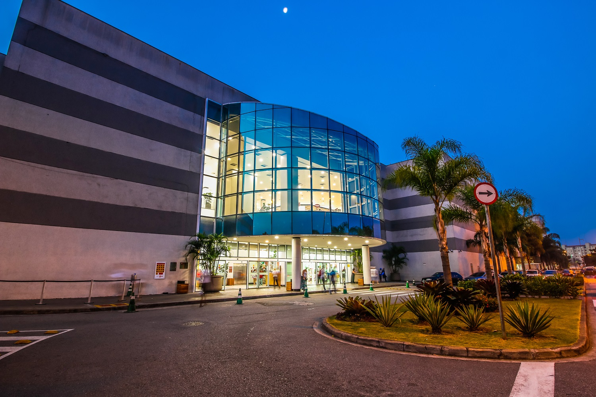
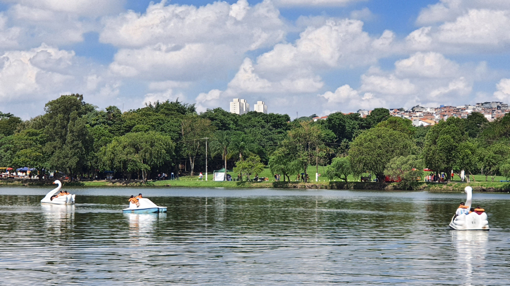

Compras e Lazer
A Zona Leste oferece ótimas opções para suas compras e momentos de lazer:
Shopping Metrô Itaquera

Um dos maiores shoppings da Zona Leste, com uma vasta gama de lojas, praça de alimentação, cinemas e acesso direto à Estação Corinthians-Itaquera do Metrô e CPTM. Perfeito para um dia de compras ou entretenimento. (Aprox. 7 km do hotel)
Visitar Site
Shopping de Suzano (para quem busca algo mais distante)

Para quem busca uma opção um pouco mais afastada, mas ainda acessível, oferece diversas lojas e serviços. (Aprox. 20 km do hotel)
Visitar Site
Parque Ecológico do Tietê

Um verdadeiro pulmão verde na cidade, ideal para caminhadas, ciclismo, piqueniques e contato com a natureza. Conta com museu do catavento, centro de visitantes e áreas de lazer. Ótima opção para relaxar ao ar livre. (Aprox. 10 km do hotel)
Visitar Site
Parque Chico Mendes (São Miguel)

Próximo ao hotel, este parque é uma excelente opção para um passeio tranquilo, com áreas verdes, trilhas e espaços para atividades físicas. (Aprox. 3 km do hotel)
Visitar Site